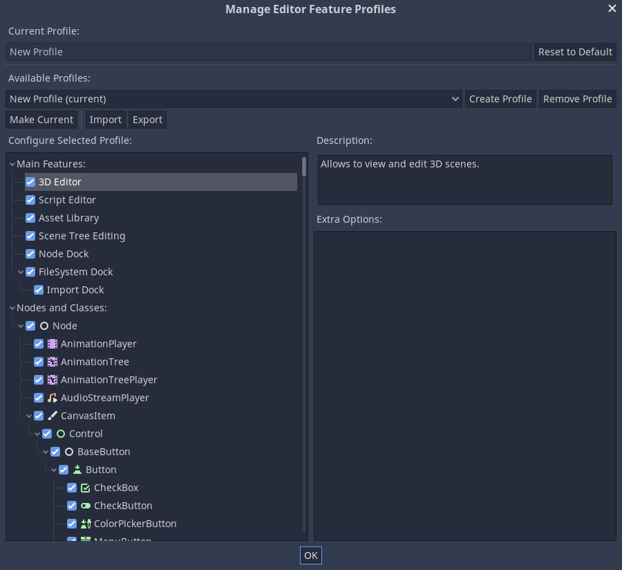
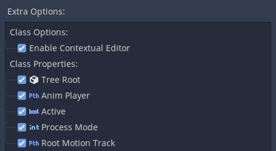

Đang cập nhật
Nội dung trang này chưa được cập nhật cho Godot
4.7
và có thể đã lỗi thời. Nếu bạn biết cách cải thiện trang này hoặc xác nhận
được rằng nó vẫn đúng, hãy gửi một pull request (bản tiếng Anh).
Quản lý tính năng trình chỉnh sửa
Giới thiệu
Trong một số trường hợp, bạn có thể muốn giới hạn những tính năng được dùng trong trình chỉnh sửa Godot. Ví dụ, một nhà thiết kế UI trong nhóm không cần thấy các tính năng 3D, hoặc một người dạy muốn giới thiệu dần các tính năng cho học viên. Godot có một hệ thống tích hợp sẵn gọi là "feature profiles" để làm việc này.
Với feature profile, các tính năng chính và các node có thể được ẩn khỏi trình chỉnh sửa. Việc này chỉ ẩn một phần giao diện và không thực sự gỡ bỏ hỗ trợ cho các tính năng đó, nên các scene và script dựa vào những tính năng này vẫn hoạt động bình thường. Điều này cũng có nghĩa feature profile không phải là một kỹ thuật tối ưu hóa. Để biết cách tối ưu Godot, xem Hiệu năng.
Tạo profile
Để quản lý các tính năng của trình chỉnh sửa, vào Editor > Manage Editor Features. Thao tác này sẽ mở cửa sổ Manage Editor Feature Profiles. Mặc định sẽ chưa có profile nào. Nhấp vào Create Profile và đặt tên cho nó. Sau đó bạn sẽ thấy danh sách tất cả các tính năng trong trình chỉnh sửa Godot.

Mục đầu tiên cho phép gỡ bỏ các tính năng chính của trình chỉnh sửa, như trình chỉnh sửa 3D hoặc trình chỉnh sửa script. Bên dưới các tính năng chính là mọi lớp và node trong Godot, cũng có thể bị vô hiệu hóa. Nhấp vào một node và tất cả thuộc tính cũng như tùy chọn của nó sẽ được liệt kê trong ô Extra Items, mỗi mục đều có thể được vô hiệu hóa riêng.
